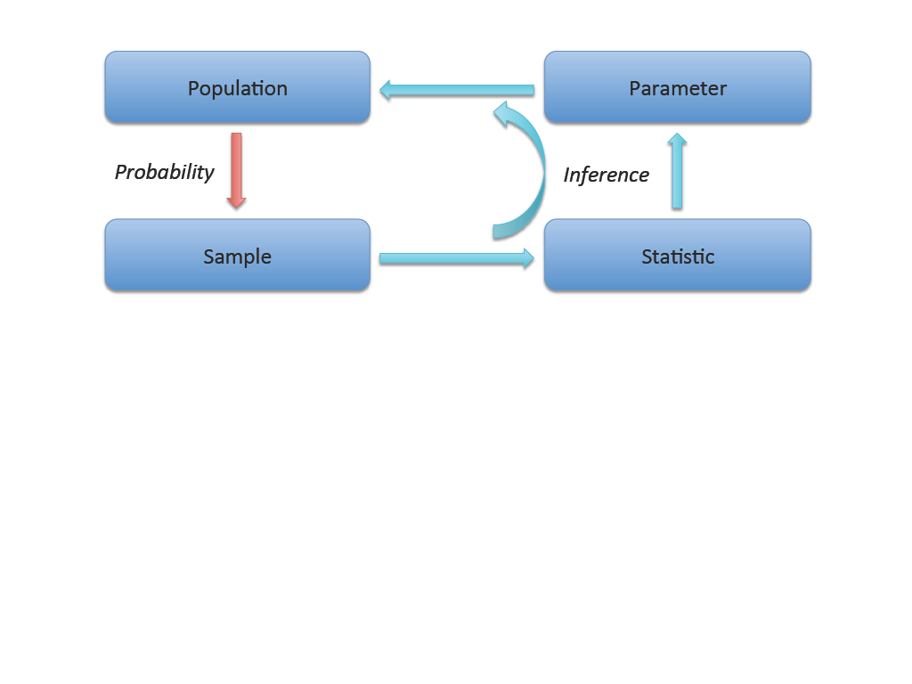
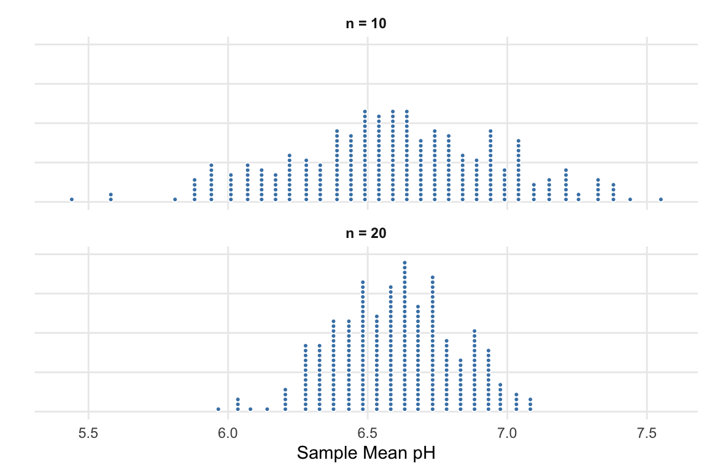

2.1 Sampling Variability
So far in this course, you have learned how to collect data, visualize it, and compute summary statistics. But statistics is about more than describing the data you have — it is about using data to learn about a larger population. The central challenge is this: every sample is different. If you took another sample from the same population, you would get different results. This chapter introduces the foundational ideas that make statistical inference possible: the distinction between parameters and statistics, the concept of a sampling distribution, and the standard error as a measure of how much sample statistics vary. These ideas are the bridge from describing data to drawing conclusions about the world.
Key Concepts
- Distinguish between a population parameter and a sample statistic, recognizing that a parameter is fixed while a statistic varies from sample to sample
- Compute a point estimate for a parameter using an appropriate statistic from a sample
- Recognize that a sampling distribution shows how sample statistics tend to vary
- Recognize that statistics from random samples tend to be centered at the population parameter
- Estimate the standard error of a statistic from its sampling distribution
- Explain how sample size affects a sampling distribution
Parameters vs. Statistics
Statistical inference is using the information in a sample to draw conclusions about the entire population.
A parameter is a number that describes some aspect of the population.
A statistic is a number that is computed from the data in a sample.
We use the sample statistic as a point estimate for the population parameter.
In Chapter 2, statistical inference was defined as the process of using a statistic calculated from a sample to estimate a parameter, or unknown value, from the population. The reason this cycle works is that when we gather data properly (i.e. use a random sampling technique), the statistics behave in a predictable way. Sample statistics are rarely, if ever, the exact population parameter, but they are usually close. If we only have one sample and we don’t know the value of the population parameter, the sample statistic is our best estimate of the true population parameter (called a point estimate since it’s a single number.)
We use specific notation to distinguish parameters from statistics:
| Quantity | Parameter (population) | Statistic (sample) |
|---|---|---|
| Proportion | \(p\) | \(\hat{p}\) |
| Mean | \(\mu\) | \(\bar{x}\) |
| Standard deviation | \(\sigma\) | \(s\) |
| Difference in proportions | \(p_1 - p_2\) | \(\hat{p}_1 - \hat{p}_2\) |
| Difference in means | \(\mu_1 - \mu_2\) | \(\bar{x}_1 - \bar{x}_2\) |
Class Example 2.1.1: Parameter vs. Statistic
For each of the following, determine whether the quantity described is a parameter or a statistic and give the proper notation.
- Average height of players on the 2024 Brazil World Cup team, using data from all 23 players on the roster.
- Average daily high temperatuer in La Crosse in June, based off of randomly selecting 100 June days over the last 20 years.
- Proportion of households in the U.S. who are renting their living accommodations using data from the 2020 Census.
- Proportion of UWL students who live on campus, using data from 30 students.
Sampling Distributions
The sampling distribution shows how a statistic will vary from sample to sample.
To understand how far a statistic might be from its parameter, we need to understand what happens when we take many samples from the same population. A sampling distribution is the distribution of sample statistics computed for different samples of the same size drawn from the same population. The sampling distribution shows us how the sample statistic varies from sample to sample and gives us a way to see how close we can expect statistics to be to the true parameter value.
Class Example 2.1.2: Illustrating sampling distributions
Go to StatLens at https://jbaggett.github.io/statlens/ and click on Sampling Distributions under the Simulate Tab. We will use the Right-Skew population shape. We do not have access to the population, but we wish to estimated the (then unknown) population mean.
- What is the popuation mean (\(\mu\))?
- Use StatLens to select a sample size of 10. What was the sample mean (\(\overline{x}\)) of this data set? Is it close to the popuation mean?
- Keep taking samples of size 10, one by one. Visualize how the sample means of these samples change. Even though the sample means change from sample to sample, where do they appear to center?
- Now generate 1000 samples at once to get a fuller picture of the sampling distribution of the sample mean. Where is the distribution centered? What range do the sample means lie within?
- Reset the plot and now consider drawing samples of size 100 and exploring the sample mean. Begin with drawing samples one by one. Where do the sample means tend to center? Do they deviate much from this center?
- Now generate 1000 samples at once. Where is the sampling distribution centered? What range do the sample means like within? How does this range compare to the range from part d)?
- What accounts for the differences in variability from part d) to part f)?
Facts about sampling distributions
For many common statistics, if the sample size is large enough and representative of the population (i.e. a random sample), the sampling distribution has three important features:
Center: The sampling distribution is centered at the population parameter. On average, the sample statistic equals the parameter.
Spread: The sampling distribution has a measureable spread that decreases as the sample size increases. Larger samples give more precise estimates.
Shape: For many statistics (e.g. \(\overline{x}\) and \(\widehat{p}\)), the sampling distributionis approximately bell-shaped (normal) when the sample size is large enough.
Sampling distributions tell us useful information about which sample statistics are likely to occur. Sample statistics that fall near the center of the sampling distribution are more likely to occur than those that fall far from the center. Understanding which values are likely is one of the primary goals in Statistics.
The sampling distribution is fundamentally different from the data distribution:
- The data distribution shows how individual observations vary.
- The sampling distribution shows how a statistic (like the mean or proportion) varies from sample to sample.
Variability of sample statistics
As the sample size increases the variability of a statistic will decrease.
When gathering data, there is a tradeoff between how large a sample is and the accuracy of the statistic calculated from the sample. This happens because with a larger sample size, we get a more complete picture of what the population looks like. So, as the sample size increases, we are more likely to see sample statistics that are closer to the true value of the population parameter (i.e. the variability of the sample statistics tends to decrease). We saw this in the last example where we explored the sampling distribution for the mean in StatLens.
Two factors control how much a sample statistic bounces around from sample to sample:
Sample size (\(n\)): Larger samples produce statistics that are closer to the parameter. This is intuitive — a sample of 1,000 tells you more about the population than a sample of 10.
Population variability: If the population is very homogeneous (everyone is similar), then any sample will look like any other sample, and the statistic won’t vary much. If the population is very heterogeneous (lots of individual differences), then different samples can look quite different, and the statistic will vary more.
Class Example 2.1.3: Average pH levels in Florida lakes
The figure below shows two sampling distributions for the average pH level in Florida lakes for two different sample sizes.

The difference between these two dotplots is that one comes from samples where \(n=10\) and the other comes from samples where \(n=20\). Identify which dotplot corresponds to each sample size.
\(n = 10\) Top Bottom
\(n = 20\) Top Bottom
What does each dot in the dotplots represent?
- For which sample size are we more likely to find an average pH greater than 7?
Circle one: \(n = 10\) \(n = 20\)
Standard Error
In a sampling distribution the standard error is the standard deviation of the statistic.
We need a single number that quantifies how much a statistic varies from sample to sample. That number is the standard error. It measures the typical distance between a sample statistic and the population parameter. The standard error of a statistic is very important because it gives us a sense of how certain we are that our statistic is accurate, so it is important that we can easily estimate the standard deviation of the sampling distribution. When we use a computer to generate a sampling distribution, it is very easy to have the computer calculate the standard deviation of the sampling distribution. However, there is also a graphical technique we can use to estimate the standard deviation of a distribution.
An inflection point is a point on a distribution where the up-cup becomes the down-cup.
Using some ideas from calculus, we can say the first standard deviation on either side of the mean occurs at the inflection points. Essentially, when tracing along the distribution from left to right, when your pen stops making an up-cup (a cup that can hold water) and starts making a down-cup (cannot hold water), that occurs approximately one standard deviation from the mean. The same occurs on the other side of the mean.
Class Example 2.1.4: Estimating standard errors from a dot plot
Refer back to Figure 2 from Example 6.3. Use the method above to estimate the standard error for each data set.
Do not confuse the standard error with the standard deviation of the data.
- The standard deviation (\(s\) or \(\sigma\)) measures how much individual observations vary around the mean.
- The standard error (SE) measures how much a sample statistic varies around the population parameter from sample to sample.
Why the standard error matters
The standard error is the engine of statistical inference. Here is why:
Confidence intervals are built by going a certain number of standard errors above and below the point estimate. A rough 95% confidence interval is:
\[\text{statistic} \pm 2 \times SE\]
Hypothesis tests compare an observed statistic to what we would expect under the null hypothesis. The comparison is made in units of standard errors: “Is the observed result more than 2 standard errors from the null value?”
Sample size planning uses the standard error to determine how many observations are needed to achieve a desired level of precision.
In the coming chapters, we will use simulation to estimate the standard error. In later chapters (Unit 3), we will use mathematical formulas to calculate it directly.
Words of caution
The statistics calculated from a sample are only reliable if we collect our data correctly and have a representative sample. When we do not use proper techniques to gather the data, then the statistics we calculate will be biased.
Summary
- A population parameter is a fixed but unknown numerical summary of the population. A sample statistic (point estimate) is computed from data and serves as our best guess of the parameter.
- Different samples from the same population yield different statistics. This is sampling variability — it is not a mistake, but a fundamental feature of working with samples.
- The sampling distribution of a statistic describes how the statistic varies across all possible samples of a given size. It is typically centered at the parameter, and its spread decreases as sample size increases.
- The standard error is the standard deviation of the sampling distribution. It measures the precision of the statistic as an estimate of the parameter.
- The standard error is not the same as the standard deviation of the data. The standard deviation measures variability of individual observations; the standard error measures variability of a statistic.
- Larger samples produce smaller standard errors, meaning more precise estimates.